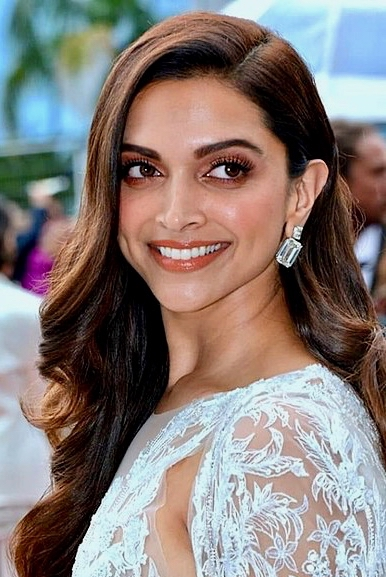

A film extra in 1970s Bollywood is madly in love with a reigning superstar. However, she loves a devious producer, but his greed for power and money is greater than his need for her, and when she comes in the way of his ambitions, he decides to murder her.This is an indian movie and is available on netflix.It was released on 9 November 2007.
This is one of my favorite movies is because i love the way it made me feel many emotion,love,anger,and made me laugh.This movie also has alot of guest that are very popular celebreties so seeing them all together is refreshing.
| MAIN CAST | PICTURES |
|---|---|
| Shah rukh Khan as both Om Prakash and Om Kapoor | |
| Deepika Padukone as Shanti Priyah and Sandhya Bansal ("Sandy") |  |
| Arjun Rampal as Mukesh Mehra ("Mike") | |
| Shreyas Talpade as Pappu Master | |
| Kirron Kher as Bella Makhija |